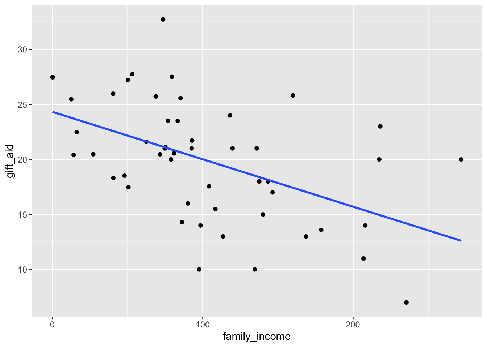

library(ggplot2)
suppressMessages(library(dplyr))Regression Inference
elmhurst <- read.csv("https://raw.githubusercontent.com/roualdes/data/refs/heads/master/elmhurst.csv")Want to predict gift_aid, measured in $1,000, using family_income also measured in $1,000.
ggplot(elmhurst, aes(family_income, gift_aid)) +
geom_point() +
geom_smooth(method = "lm", se = FALSE)`geom_smooth()` using formula = 'y ~ x'
There appears to be a moderate, negative, and linear relationship between family income and gift aid.
cor(elmhurst$family_income, elmhurst$gift_aid)[1] -0.4985561fit <- lm(gift_aid ~ family_income, data = elmhurst)
summary(fit)
Call:
lm(formula = gift_aid ~ family_income, data = elmhurst)
Residuals:
Min 1Q Median 3Q Max
-10.1128 -3.6234 -0.2161 3.1587 11.5707
Coefficients:
Estimate Std. Error t value Pr(>|t|)
(Intercept) 24.31933 1.29145 18.831 < 2e-16 ***
family_income -0.04307 0.01081 -3.985 0.000229 ***
---
Signif. codes: 0 '***' 0.001 '**' 0.01 '*' 0.05 '.' 0.1 ' ' 1
Residual standard error: 4.783 on 48 degrees of freedom
Multiple R-squared: 0.2486, Adjusted R-squared: 0.2329
F-statistic: 15.88 on 1 and 48 DF, p-value: 0.0002289Fitted regression equation
expected gift aid = 24.32 + -0.04 * family income
or
\[\widehat{gift\_aid} = 24.32 + -0.04 * family\_income\] Use multiple Adjusted R^2: 23.29% of the variation in gift aid is explained by this linear regression model of family income.
Intercept: For a family with $0 in income, we expect their gift aid to be $2.432^{4}.
Slope: For every $1,000 increase in family income, we expect gift aid to go down by $40.
Prediction: For a family with income of $200,000, we expect the student to receive $1.5705^{4} in gift aid.
predict(fit, newdata = data.frame(family_income = 200),
interval = "confidence",
level = 0.95) fit lwr upr
1 15.705 13.1739 18.2361Prediction confidence interval: We are 95% confident that for a family with income of $200,000, we expect the student to receive gift aid between $1.317^{4} and $1.824^{4}.
confint(fit, level = 0.98) 1 % 99 %
(Intercept) 21.21134898 27.42730904
family_income -0.06908553 -0.01705778Confidence interval for the intercept: We are 98% confident that for a family with $0 in income, we expect the student to receive between $2.121^{4} and $2.743^{4}.
Confidence interval for the slope: We are 98% confident that for each next $1,000 a family earns in income, we expect that amount of gift aid the student receives to go down by between $20 and $70.